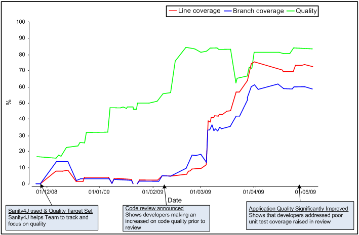

How Does it Work in Practice?
The following diagram shows the graph produced by Sanity4J
for a Java Development Project. The project began by creating
code quickly, with little regard for quality (green line). Sanity4J
reports were configured for the project and an 85% quality target
was set. Developers began to improve code quality by fixing issues
as the project progressed. Towards the go-live date, the team was
advised that their code would be subjected to an external review.
This caused an increased focus on quality which Sanity4J tracked.

The external code review pointed out that the project had failed
to reach Departmental targets for automated unit tests, represented
by the red and blue lines. Prior to go-live, the project was able to
dramatically increase their level of automated unit testing and their
progress was tracked by Sanity4J.
The result was a higher quality product, which is estimated
to cost much less to maintain in future years.
Monitoring Progress
The information that Sanity4J tracks was available to developers,
project staff and the project executive throughout the development
of the project. Sanity4J provided the ability to easily measure and
track quality. It is unlikely that the project would have achieved
such significant improvements without support from Sanity4J.